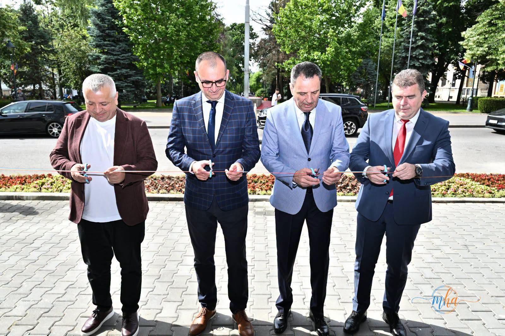
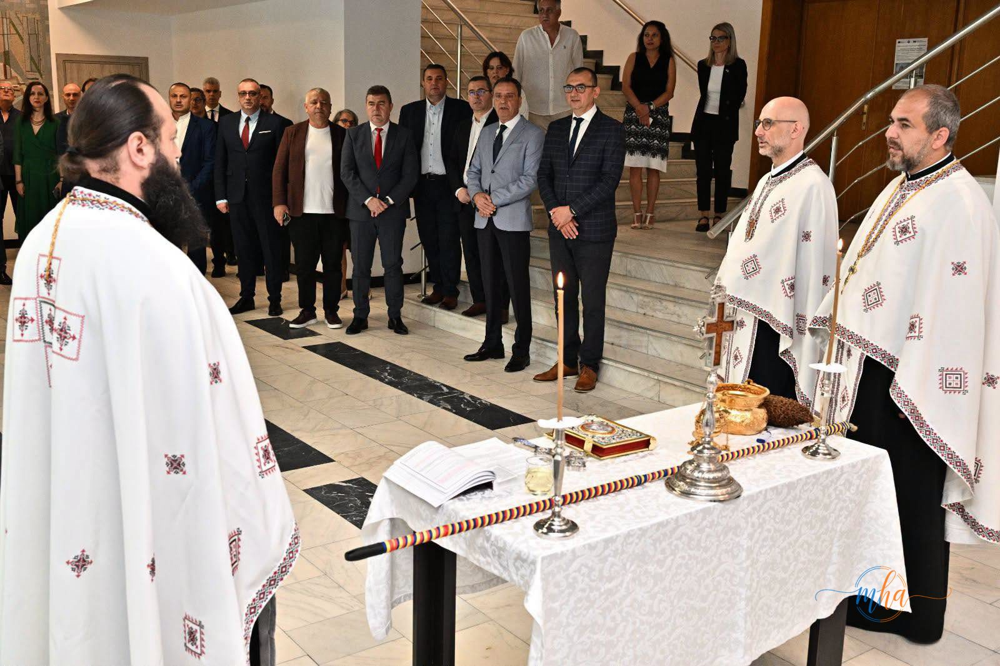
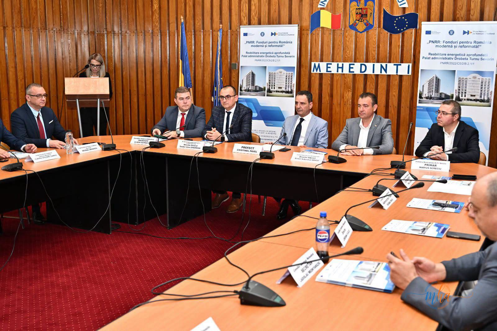
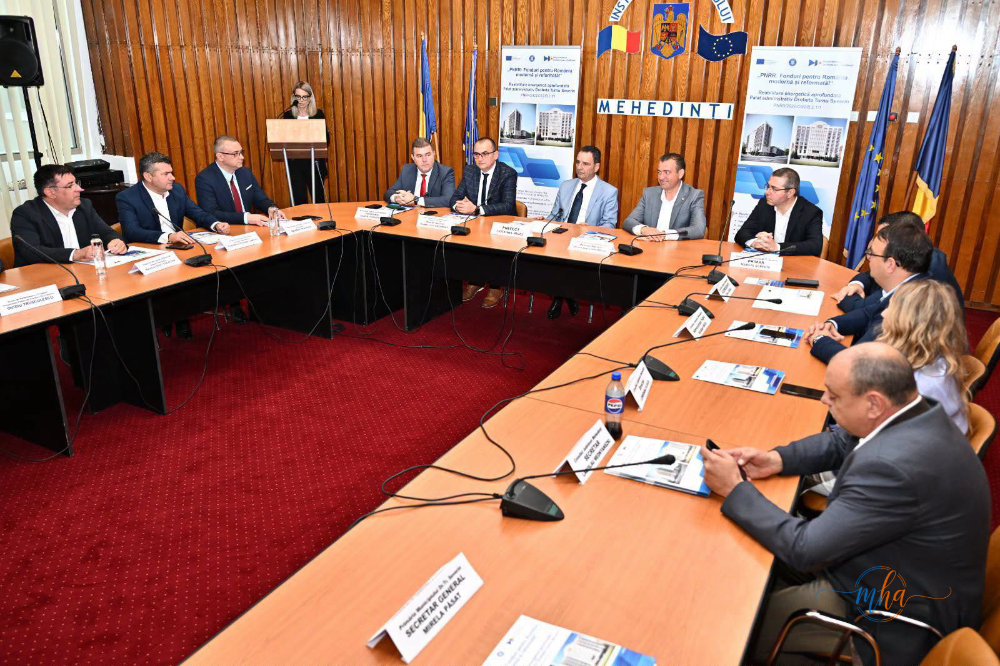
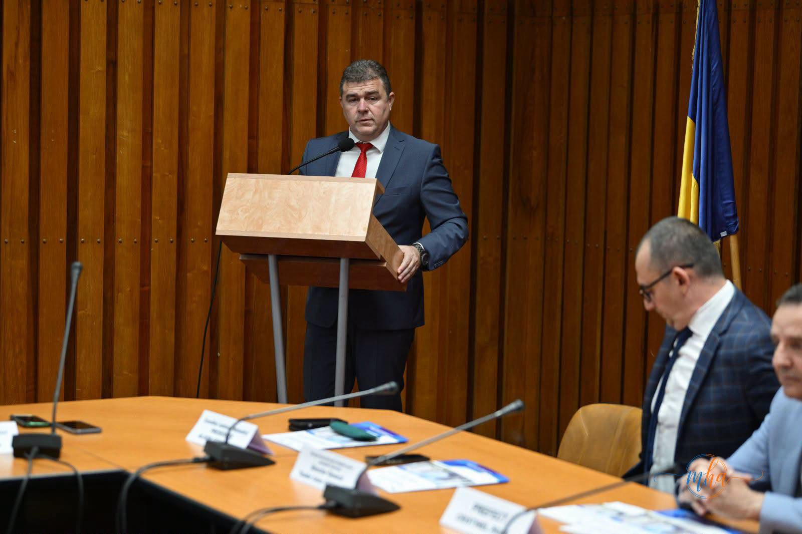
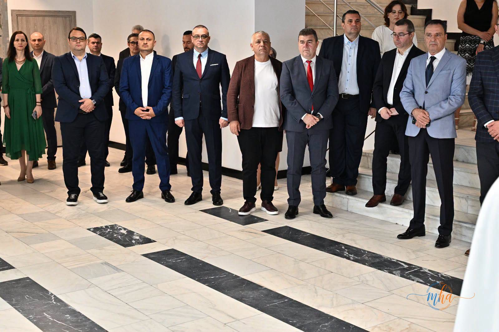

Dimineața de 3 iunie 2026 a adus în centrul Drobetei un moment așteptat de mulți: Palatul Administrativ, clădirea care adăpostește cele mai importante instituții ale județului, a fost reinaugurat după o amplă lucrare de reabilitare energetică finanțată prin Planul Național de Redresare și Reziliență (PNRR). Reporterii noștri au fost prezenți și au urmărit fiecare moment.
Tăierea panglicii — un moment simbolic în fața clădirii transformate

Sub cerul senin al dimineții de vară, în fața unei clădiri cu totul schimbate față de cum o știau severinenii, foarfecele a tăiat panglica tricoloră. Patru oficiali ai județului au marcat împreună acest moment: Aladin-Gigi Georgescu, președintele Consiliului Județean Mehedinți, Cristinel Pavel, prefectul județului, Marius Screciu, primarul municipiului Drobeta-Turnu Severin, și Teodor Ionel Ghinion, directorul general al instituției prefectului.
Fațada Palatului Administrativ este de nerecunoscut față de ce a fost. Suprafețe mari de sticlă, termoizolație modernă, tâmplărie nouă — totul transmite că banii europeni au ajuns acolo unde trebuia. Ceasul digital de pe acoperiș — un detaliu care nu scapă ochiului de reporter — marchează ora inaugurării ca un semn că orașul a intrat pe un nou fus al modernizării.
Sfințirea — un alt început, cu preoți și lumânări în holul nou

Înainte de discursuri și conferințe, clădirea a fost sfințită. Doi preoți au oficiat slujba în holul de marmură al palatului, în fața unui auditoriu amestecat: prefect, consilieri județeni, angajați, primari din județ. Lumânările aprinse și crucile ridicate în noul hol — cu podea în șah alb-negru și scări de marmură strălucitoare — au dat evenimentului acea atmosferă solemnă pe care severinenii o asociază cu momentele care contează.
Ce înseamnă investiția pentru cetățeni și instituții
🏛️ Ce s-a modernizat prin PNRR
- Reabilitare energetică aprofundată a întregii clădiri
- Fațadă nouă cu termoizolație modernă
- Tâmplărie nouă — geamuri cu eficiență termică ridicată
- Sisteme de iluminat eficient energetic
- Reducerea consumului de energie și a costurilor de funcționare
- Condiții îmbunătățite pentru angajați și cetățeni
Clădirea găzduiește Instituția Prefectului – Județul Mehedinți, Consiliul Județean Mehedinți, Primăria Municipiului Drobeta-Turnu Severin, precum și alte instituții publice. Prin această investiție, zeci de angajați ai administrației publice lucrează acum în condiții care reflectă standardele europene, iar cetățenii care vin să rezolve acte se vor întâlni cu o clădire complet transformată.
Conferința de presă — cifrele și oamenii din spatele proiectului


La conferința de presă care a urmat inaugurării, în sala de ședințe cu pancarde vizibile — „PNRR: Fonduri pentru România modernă și reformată! — Reabilitare energetică aprofundată Palat Administrativ Drobeta-Turnu Severin, PNRR/2022/C5/2/B.2.1/1" — oficialii au vorbit pe rând despre semnificația proiectului.
„Acest proiect a fost dus la bun sfârșit pentru că, în ciuda provocărilor apărute pe parcurs, au fost găsite soluțiile necesare pentru finalizarea investiției. Îl felicit pe prefectul de până acum o lună, Alin Isuf, pentru coordonarea implementării proiectului și iată, confirmă încă o dată, că PSD construiește pentru Mehedinți!"— Aladin-Gigi Georgescu, Președinte Consiliul Județean Mehedinți

Prezența la masă a prefectului Cristinel Pavel, a primarului Marius Screciu și a directorului general Teodor Ionel Ghinion, alături de alți reprezentanți ai administrației județene, a transmis un mesaj clar: proiectul a fost un efort comun, dincolo de granițele instituționale.
Reporterul în teren — ce am văzut dincolo de discursuri

Dincolo de panglici și discursuri, ceea ce ochiul de reporter reține este contrastul. Clădirile din jur — unele nepictate, unele cu urme de ani greli — fac ca noul Palat Administrativ să pară că a aterizat dintr-o altă lume în centrul Severinului. Holul de marmură, noua tâmplărie, lumina care intră generos prin geamuri imense — toate spun că se poate, că banii europeni, când ajung la destinație, chiar transformă.
„Finalizarea proiectului reprezintă un câștig pentru instituțiile care funcționează în această clădire, dar și pentru cetățenii județului Mehedinți", se preciza în comunicatul oficial. Reporterii MehedintiAzi.ro, prezenți în teren, au văzut că nu este doar o formulă de protocol — clădirea chiar arată altfel. Și asta contează.
Cod proiect: PNRR/2022/C5/2/B.2.1/1 — Reabilitare energetică aprofundată Palat Administrativ Drobeta-Turnu Severin